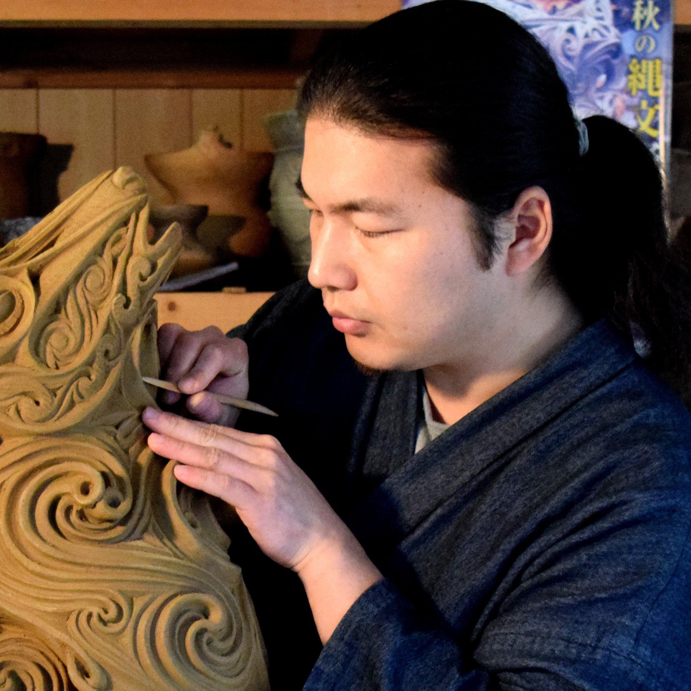

セッション内容
タイムテーブル
講演者名敬称略。
※スケジュールは一部調整中です。変更になる可能性があります。
| 09:30 – 10:00 | 受付 | |
|---|---|---|
| 10:00 – 10:10 | オープニング | |
| 10:10 – 11:10 | 60分 | 調整中 |
| 11:10 – 11:20 | 休憩 | |
| 11:20 – 12:10 | 50分 | 調整中 |
| 12:10 – 13:30 | 昼休憩 | |
| 13:30 – 14:00 | 30分 | 講演内容調整中 ボレロ村上（村上原野） |
| 14:00 – 14:10 | 休憩 | |
| 14:10 – 14:40 | 30分 | 調整中 |
| 14:40 – 14:55 | 休憩 | |
| 14:55 – 15:25 | 30分 | 講演内容調整中 前川 昌幸 |
| 15:25 – 15:40 | 休憩 | |
| 15:40 – 16:40 | 60分 | 調整中 |
| 16:40 – 16:55 | 休憩 | |
| 16:55 – 17:55 | 60分 | 調整中 |
| 17:55 – 18:30 | クロージング |
講演者プロフィール
- 講演内容調整中
-
講演者プロフィール
ボレロ村上（村上原野）
中３女子です。本業は縄文造形家で、岡山県新見市の法曽で焼き物をしています。趣味はC++でコンパイル時処理をすること。constexpr で 様々な機能を実装した Sprout C++ Library を Github で公開もしています。
- 講演内容調整中
-
講演者プロフィール
前川 昌幸
株式会社イー・ネットワークス マークアップ/フロントエンド/サーバサイドエンジニア
CPI エバンジェリスト
岡山県在住。イー・ネットワークス所属。CPI エバンジェリスト。okayama-js主宰。WordBench倉敷モデレーター。職域はサーバーセットアップ・保守、サーバーサイドプログラミング、マークアップ、フロントエンドエンジニアリング、プロジェクトマネージャー、企画、ディレクションなど。
主な書籍として、『プロが教えるレスポンシブWebデザイン 現場のメソッド』（MdN、共著・監修）、『Webサイト、これからどうなるの? キーワードから探るWeb制作の未来像』（MdN、共著）など。